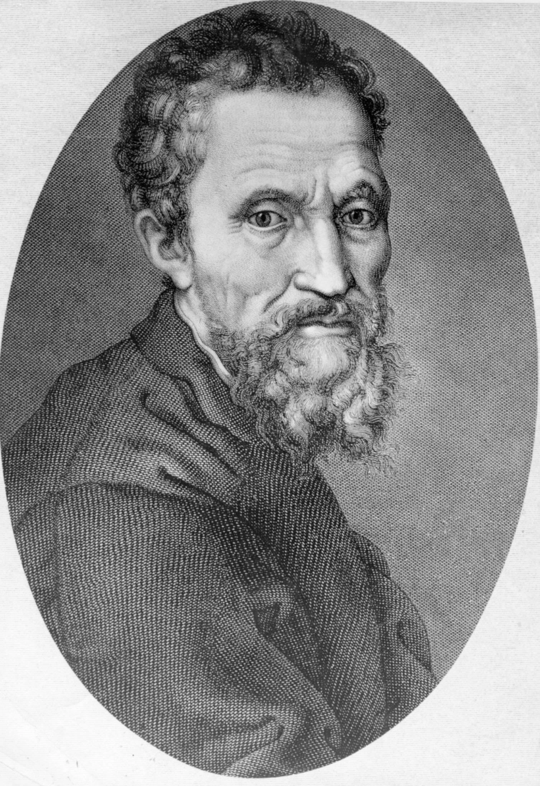

Since ancient times, authenticity has been the most precious attribute of an object, transforming it into art. Unique, original ideas, such as painting on a canvas or shaping an alloy in the smallest details, have made the difference - the transposition of an idea from the human mind into something physical, palpable, visible to the eye.
The dictionary says that sincerity means the absence of pretense or
cunning, honesty, innocence. However, the etymology of this word
comes from the Latin “sine cera” - translated “without wax”. Since
the time of
Michelangelo

In contrast, secrets have always aroused a mystical desire to find out, or, if they are yours, to protect them. There are a multitude of reasons for the birth of a secret, from an embarrassing childhood incident to entire conspiracies.
Such a secret lies at the foundation of the film “The Gorge” , which I watched together with the curly-haired boy. The film, appeared in February this year, has the british-American actress Anya Taylor-Joy in the main role and the actor Miles Teller . It’s a film that blends romance, action, science, and fantasy, gripping you from the very first minutes. Unsurprisingly, the couple dives into uncovering answers and discovering the big secret. And then I can’t help but wonder—predictably—what is the expiration date of a secret?
Art, cinema, and symbolism show us—often allegorically—that all secrets eventually come to light. Honesty prevails, time and again. You just have to accept it. Be honest with yourself, for only with your own secrets do you hold the power to decide their expiration date.
Perhaps we should return to writing letters. Perhaps we should spend more nights gazing into space, alone with our thoughts and secrets. We should whisper more, dream more, and find joy in simpler ways. Yet we acknowledge—mature and seasoned—that we are imperfect: shaded with gray, adorned with thorns and rose petals, carrying sincere smiles and secrets beneath our eyelids. And it is precisely because of this that we are beautiful.
Sincerely yours,
-AE